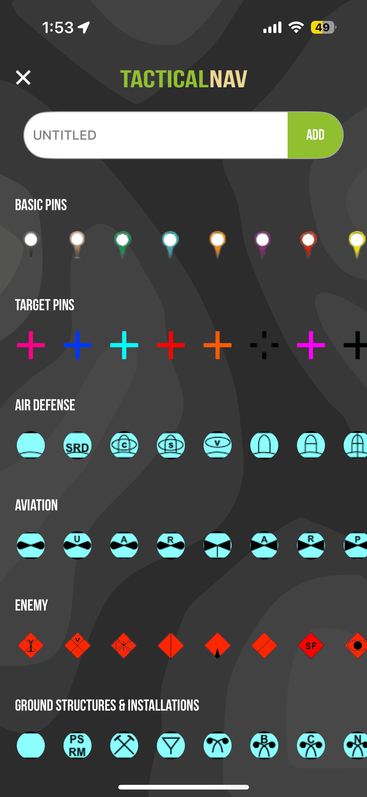
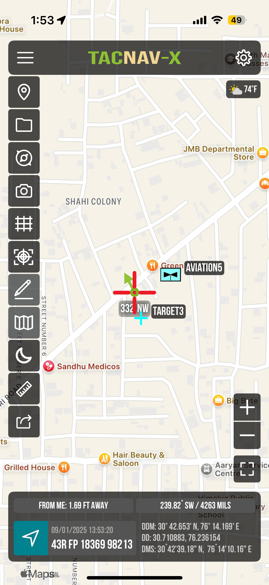
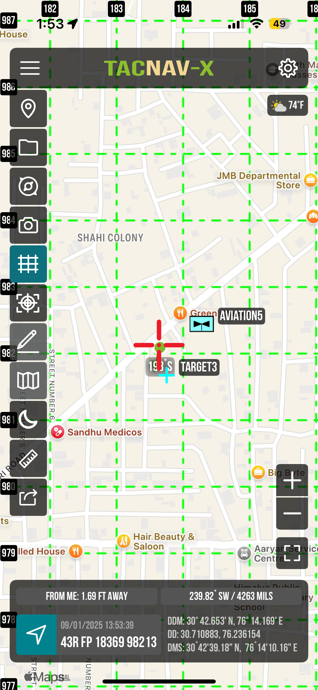
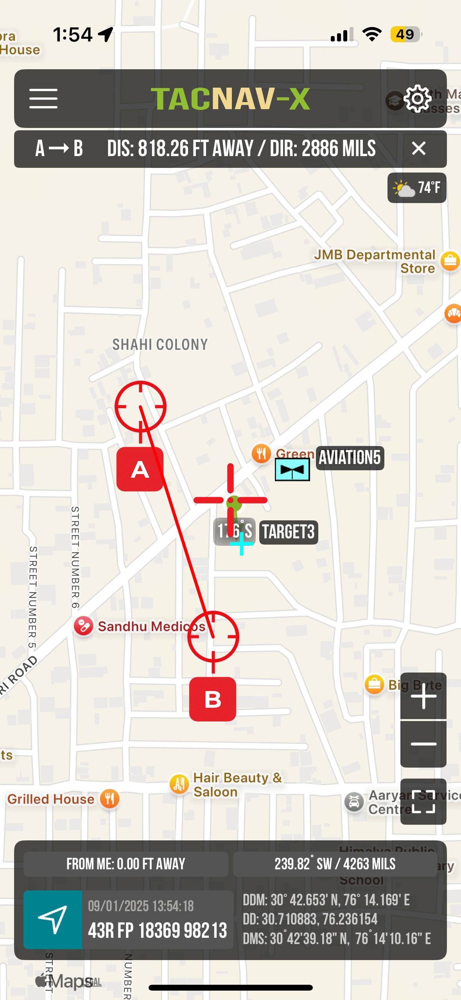
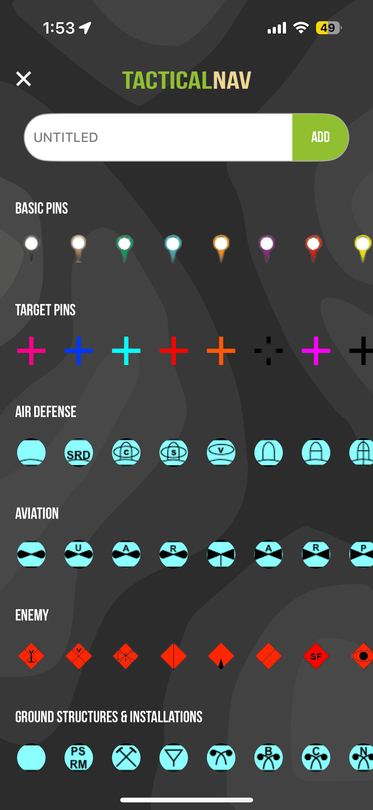
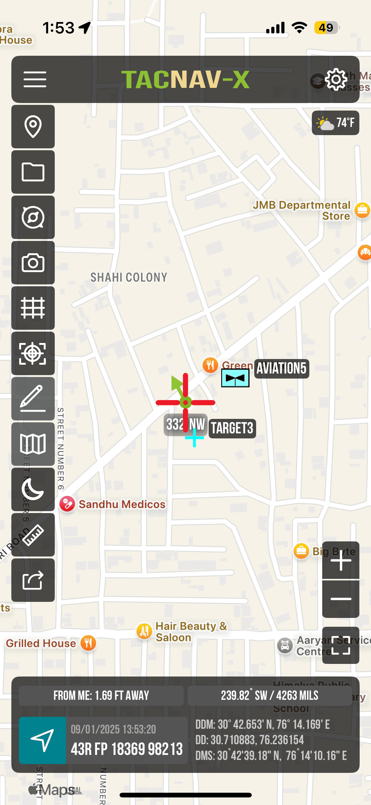
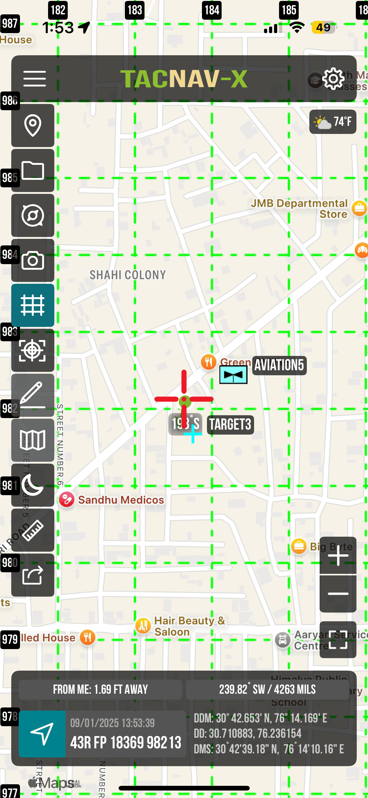
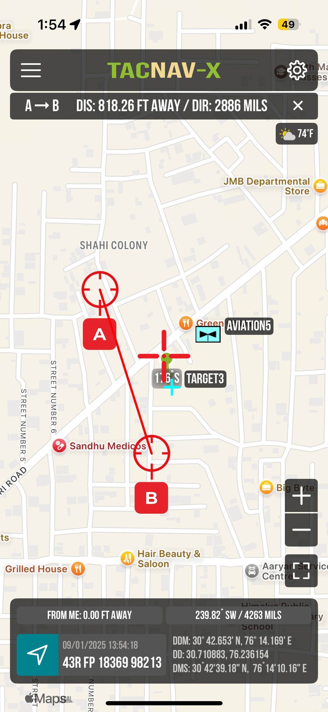
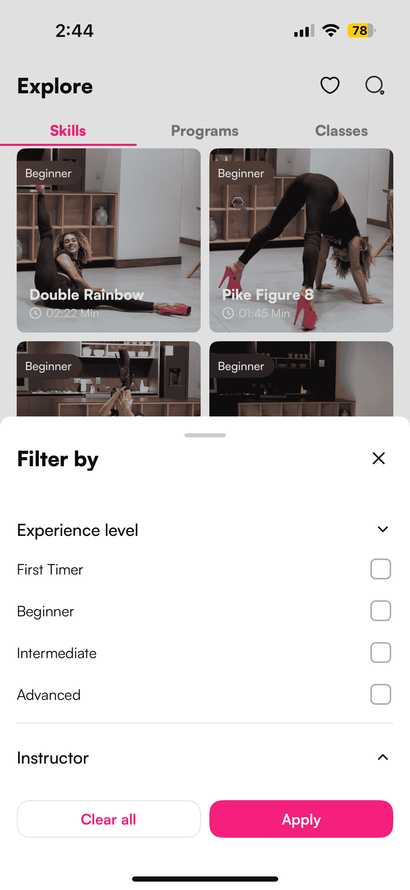
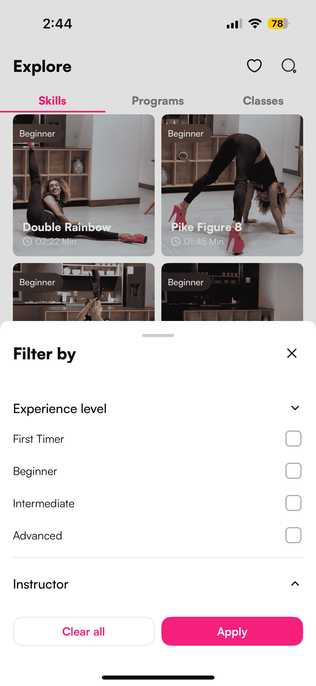

onNAV Marine
onNAV Marine is an essential tool for any boater. Its next generation Anchor Alert, 3D ENC charts, and user-friendly interface make it the perfect companion for any trip on the water. onNAV Marine has everything you need to stay safe, informed, and entertained on the water.

Tech stack: Objective-C, Swift, MapBox, AerisWeather API’s, Stormglass API’s, In-App Purchase, Firebase, SQLite database, Alamofire.
myWOD (iOS & Android)
myWOD is a personalized CrossFit workout tracker built for athletes who want full control over their workout data and progress. Designed to eliminate reliance on gym systems, myWOD empowers users to log, manage, and analyze their WODs (Workouts of the Day) with ease and accuracy—anytime, anywhere.
Key Features:
- Automatic data backups
- Search feature and calendar for easy tracking of past WODs
- Add custom movements and track max weight achievements
- Graphing to see your progress over time
- Create your own custom WODs for future use
- Backup and sync data


Tech stack: Flutter (Dart), SQLite database, GetX, iCloud storage, Sign-In Google, Sign-In with Apple.
TacNav
TacNav is a military-grade precision targeting app designed for individual Soldiers. It offers offline mapping with full functionality and no cellular signal emission, supports WGS-84 standard coordinates (MGRS, UTM, BNG, USNG), and features tactical drawing, waypoint plotting with military graphics, and a FastLock compass for quick azimuth capture. TacNav allows snapping and saving photos on maps, location sharing via email/text, a one-button night mode, Apple Watch support, and a ‘Go to Grid’ tool for precise planning—all built natively for iOS/iPadOS in austere, contested environments.


 







Tech stack: Objective-C, Swift, SwiftUI, MapKit, Google Map, In-App Purchase, SQLite database.
Fit2Flaunt
Fit2Flaunt is a popular pole dance workout app offering classes for all skill levels. It features video tutorials, workout plans, progress tracking, and community support to help users learn pole dancing moves—from basics to advanced—while staying motivated and having fun.
 

Tech stack: Swift, Firebase, In-App Purchase, GoogleSignIn, FacebookLogin, Alamofire.
Winning Ways Training
Winning Ways Training is a proven soccer development program designed to build, refine, and elevate athletic skills. Starting in backyards and boxing gyms, this well-researched method offers a complete approach to technical and athletic growth. Players at every level—from club to pro—have reached their goals and transformed their game through Winning Ways. Join us and become part of the Winning Ways Training story.

Tech stack: Swift, UIKit, In-App Purchase, SQLite Database, Firebase URLSession.
RODEO
Rodeo is a custom-built iOS application designed to simplify the management of traditional bull spectacle games. Whether you're organizing a local event or managing a competitive match, Rodeo makes it easy to handle everything from team creation to score tracking and winner announcements — all from your iPad and iPhone.
Tech stack: Swift, UIKit, Core Data, URLSession.